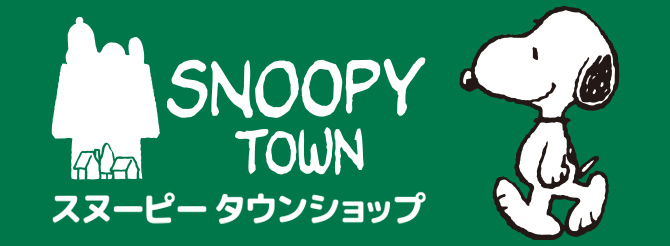
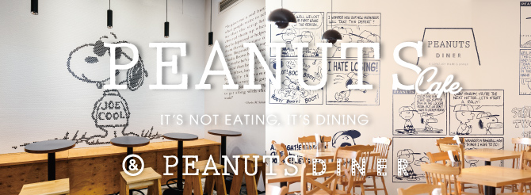
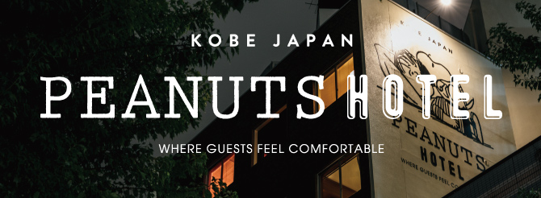
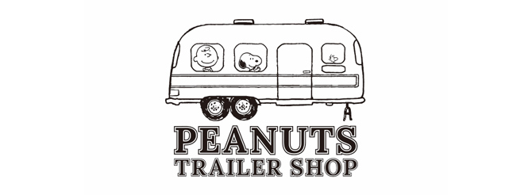
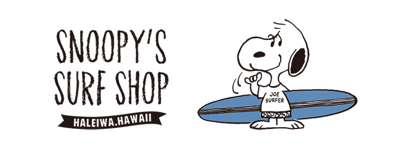

公式施設
FACILITY
-
SNOOPYMUSEUMTOKYO
サンタローザにあるシュルツ美術館の世界初のサテライト SNOOPY MUSEUM TOKYOの情報をお届けします。
-

スヌーピータウンショップ
ピーナッツのオフィシャルショップ、「スヌーピータウンショップ」のページです。 イベントやグッズなどスヌーピータウンショップに関するさまざまな情報をいちはやくおとどけします。 ※このページはスヌーピータウンショップ(株式会社キデイランド)が運営しております。
-

Peanuts Cafe/DINER
PEANUTSにゆかりの深いアメリカ西海岸の雰囲気をイメージとした、 遊び心の溢れる大人なカフェ「PEANUTS Cafe」と、PEANUTSの世界観を体感できるダイナー「PEANUTS DINER」。
-

PEANUTS HOTEL
神戸・三宮にオープンした「PEANUTS HOTEL」は、それぞれ異なるコミックをコンセプトにした お部屋をお楽しみいただけるデザインホテルです。
-
スヌーピー茶屋
和をテーマにした常設カフェ「SNOOPY茶屋」の情報をお届けします。
-
SNOOPY Chocolat
ピーナッツの世界観をテーマにした和のチョコレートショップ「「SNOOPY Chocolat」(スヌーピーショコラ)。 和の素材とカカオの香りがマリアージュした本格的なショコラをお楽しみいただけます。
-
Peanuts LIFE&TIMES
西宮阪急内のピーナッツの新しいコンセプトのお店「Peanuts LIFE&TIMES」 スヌーピーやその仲間たちを通して、日常のひとコマひとコマを イベントの連続のように楽しくするライフスタイルショップです。
-

PEANUTS TRAILER SHOP
PEANUTS 公式メンズショップ「PEANUTS TRAILER SHOP」(ピーナッツ トレーラー ショップ)。 こだわりの詰まった、衣料品や生活雑貨等、さまざまな日用品を取り扱っています。
-

SNOOPY'S SURF SHOP
スヌーピーやピーナッツの仲間たちをテーマにした公式サーフショップです。
-
CHARLES M.SCHULZ MUSEUM
アメリカ、カルフォルニア州サンタローザにあるシュルツ美術館の公式サイトです。